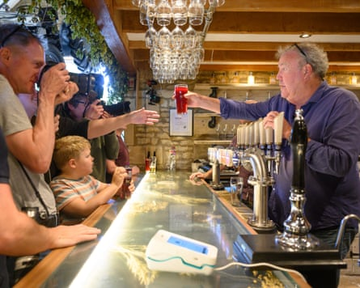

James May. But what would James Definitely Not?
All sorts of things. Skydiving. Morris dancing. Living as a monk. Agricultural work. Being a high court judge. Anything that involves dressing up. I’m not too fussy about food. I can’t think of anything I wouldn’t eat, although I have a strange ambivalence about broccoli. I can’t make my mind up about it and it infuriates people. People say: you’re not doing it properly. I think: how do you know how I’m doing it? I’ve heard you can roast it with bits of bacon, garlic and olive oil. In which case, it’s not only broccoli any more, is it?
Why does the water flow anticlockwise down the plug hole in Australia but clockwise in the UK?
Because of the rotation of the Earth. If you go to the equator – and I’ve done this – you can do an experiment with a bucket of water with a hole in the bottom. If you stand exactly on the equator and drop in a matchstick, it will stay stationary. If you walk north of the equator 100 paces, it starts going around one way. If you walk south, it starts going the other way. It’s quite a boring experiment and you have to have absolutely nothing else left to do in your life.
If you could have a sandwich named after you, what would you call it?
I think sandwiches are crap. I’m making a series on YouTube called Sarnies of the 70s, where we dig up these terrible old fillings like Spam and Branston pickle. It’s fascinating to remember what we ate when I was a child. But I describe sandwiches – and I’m afraid I also think this about pizza – as crisis food. Nobody ever says: I can’t be bothered to cook tonight. Should we go out for a sandwich? No one wants a sandwich. You are reduced to having a sandwich.
Both you and Clarkson own pubs. In the event of a zombie apocalypse, which pub would you rather be stuck at?
Oh, mine. It’s in Wiltshire. We’re heavily armed down here. People queue up at Clarkson’s. There’s queueing protocol going on, which I don’t like. We’ve had this argument many times. The whole point of the bar in a pub is that it’s wide and shallow. It’s not a hatch. Why would you queue at it? Good bar people know the order in which to serve.
Jeremy Clarkson behind the bar at his pub in an episode of Clarkson’s Farm.Photograph: Prime Video
Alan Davies told us in this very column that he gets mistaken for you. Who do you get mistaken for, if not Alan Davies?
I have been mistaken for Alan Davies. I’ve been told I look like King Théoden from Lord of the Rings. Robert Plant is very flattering. Billy Connolly is flattering. Unfortunately, quite a few times when I’ve been out walking or riding my bike around London, I’ve been mistaken for Jeremy Clarkson . I have to go home, examine myself very deeply and think: what have I done?
The small print on your new tour, Explorers, warns of “occasional scent, fog and other immersive theatrical elements”. What is your favourite occasional scent?
Good question. I like all the obvious nature scents like flowers, freshly mown grass and rain falling on a hot pavement. I like the smell of bicycle shops because I like that smell of rubber and rubber solution. It’s not a pervy or fetish thing. I like the smell of freshly pumped petrol, which smells exactly like what it isn’t – which is delicious. If you get petrol in your mouth because you’re siphoning it from the lawnmower, it tastes absolutely foul. But when it’s coming out of the pump into your car, it’s got almost a mango juice smell to it.
What’s been your most cringeworthy run-in with a celebrity?
I haven’t had any, really. I’ve never run up to Alan Davies and said: “I love Top Gear . Can I have your autograph?”
Would you rather die at the bottom of the ocean or deep out into space?
I’ve wondered about dying in space. The Apollo 11 lunar module was too fragile to test on Earth, so what if it hadn’t worked? They’d have been stuck on the moon for eternity. How do you end it? Do you just sit there and gradually suffocate? Or do you take off your space helmet, take a deep breath, open the door and effectively boil? Dying at the bottom of the ocean feels particularly dark and lonely. I’m going to go for space because the view in the last few seconds would be better.
If you could change the size of any animal and keep it as a pet, what would you choose?
A miniature elephant. I was going to say a tiger. But then you can just have a domestic cat, can’t you? A miniature great white shark in a pond in your garden would be pretty cool. If you had miniature blue whales in an aquarium, they’d come up to the surface and blow off in miniature. I’d like that.
Who is your biggest nemesis?
Honestly, it’s probably Jeremy Clarkson.
- James May’s show Explorers – The Age of Discovery tours Australia and New Zealand from 29 July, and the UK from 20 September